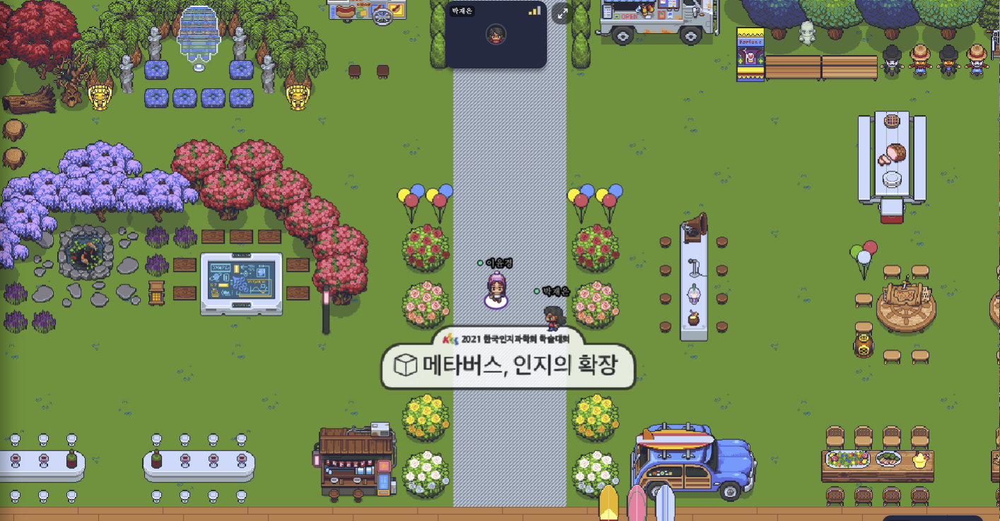
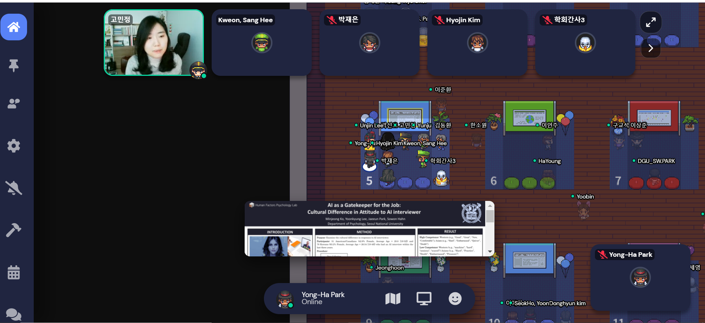
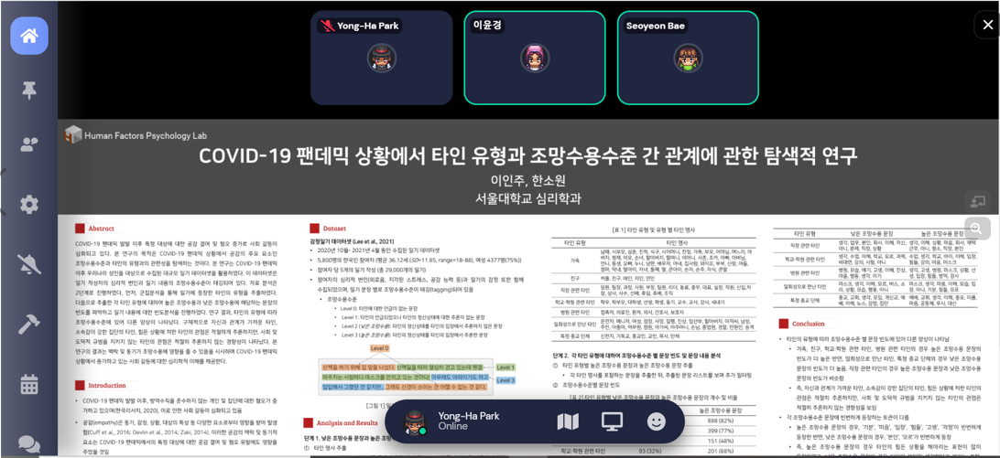

Description :

HFP (Human Factors Psychology) lab members presented their work in a The Korean Society for Cognitive Science (KSCS) conference, [Kcogsci] with the topic of “Metaverse, expansion of cognition”. The conference was held on 04, December 2021.
Yoon Kyung Lee (Ph.D. student) presented “Evaluation of Empathy Detection Performance of Deep Learning Models using Theory-of-Mind levels and COVID-19 Emotion-Diary Corpus” (poster).

Min Jeong Ko (M.A. student) presented “AI as a Gatekeeper for the Job: Cultural Differences in Attitude to AI interviewer” (poster).

Yoon Won Jung (M.A. student) presented “Age and gender differences in loneliness prevalence during the Covid 19: Analyses on large cross-sectional surveys and emotion diaries” (poster).

In Ju Lee (M.A. student) presented “Exploratory research on the type of others and perspective taking level under COVID-19 pandemic” (poster).

Seo Yeon Bae (M.A. student) presented “Effect of Relationship Style on Human-AI Chatbot Trust” (poster).

The conference was held in Gather.Town virtually. Using Gather.Town made active interaction among participants available (e.g., approaching other to chat or have physical conversation, watch speaker’s speech provided with real time video, have a free talk at lounge)
Our members shared more detailed stories about their experience:
“Attending the conference with my lab mates was a great experience. I presented the task of predicting the empathy level of artificial intelligence using deep learning, a new computational methodology that has not been used in conventional psychology. The people I met at the conference showed a lot of interest in the computational definition of the theory of mind, and the new dataset and collection process called emotion diary and ToM labeling. People interested in deep learning came and asked a lot of specific and technical questions as well. The warm support and feedback they gave me would be of great help to my research. Workshops and symposiums led by students on topics such as Human-AI Interaction, chatbots, and the metaverse were very informative.” - Yoon Kyung Lee
“It was the first time for me to have the poster presentation in the virtual space, Gather.Town. Different from Zoom conference, actively moving the avatar representing was not only a fun experience but also made it available for me to pay more attention to other researchers’ lectures and presentations about recent research trend. During the poster presentation session, many professors and researchers’ provided questions and suggestions for current study’s development. Since the degree of anthropomorphism people feel from AI interviewer can change the attitude of interviewees, many people asked about this point. The other point many people asked about was the expectation of people’s attitude change after robot technologies’ commercialization in the fields that were once considered as indigenous to human beings (e.g., arts, music). During the conversation, discussion about better methods AI can choose to lead greater trust and help leading motivation from users were done between motivationally cheering messages and quantitative indicator (Suggest specific methods to achieve goal). Also, other researchers shared their opinions during the poster session, and it helped me to think more deeply about the topic and expand the ideas. For next Kcogsci conference, I hope to join other researchers’ poster sessions and share the opinions and ideas that can help their research. Thanks to KSCS once again for this great opportunity.” - Min Jeong Ko
“It was a fun experience to present my research at Kcogsci 2021 and listen to talks about topics that piqued my interest. It was second time for me to use Gathertown to participate in virtual conferences, I found that the lecture '메타버스_몸을 즐기는 새로운 방식(Metaverse_A new way to enjoy your body)' was very helpful to understand the meaning of experiencing 'metaverse'. Also, there were a lot more people who were interested in my research than I expected, which was very amusing. Lastly, I believe having the opportunity to know other researchers whom I can follow up and consult will indeed be an invaluable asset for me.” - Yoon Won Jung
“The conference was an impressive opportunity for me to have a conversation with many participants about my research. Many participants were interested in the emotional diary dataset, especially the process of tagging perspective taking level (theory of mind level) was the point they focused on. Since, there are not many datasets collected based on the psychology concept. It seemed like many of them considered the data set tagged perspective taking level (theory of mind level) as a new approach. This showed that there will be continuous need for dataset that are built on the psychological concept.” - In Ju Lee
“Kcogsci 2021 was my first conference where I introduced my research and learned a lot on HAI since I’ve started master’s program. I was glad that lots of people paid attention to my research and the field of chatbot research. They were especially interested in how psychology plays a role in the field of HAI to maximize the benefits of the technologies. Through the conference, I got some fresh ideas to launch my new research inspired by people with diverse points of view. It was an amazing experience for me!” - Seo Yeon Bae